2 Mastering the Repository Pattern¶
The purpose of this book is to arm you with recipes to solve real-world problems in the most elegant fashion. By the end of the book, you’ll have recipes for form validation, list pagination, routing, dark mode and more. This chapter covers the most universal of them: a recipe for manipulating data.
Fetching and sending data is basically all you do as a mobile developer. Think about it: You’re either showing the user what came from the server or sending what came from the user to the server.
You might already be familiar with the not-so-secret ingredient behind this recipe: the repository pattern. By the end of this chapter, you’ll not only have mastered repositories, but you’ll also have learned:
- How to handle class dependencies in WonderWords’ architecture.
- What a barrel file is and how to create one.
- What pagination is.
- What streams are.
- What a fetch policy is.
- What domain models are.
- How to approach exceptions.
- What mappers are.
That’s a lot to learn, so get ready to dive right in! While going through this chapter, you’ll work on the starter project from this chapter’s assets folder.
Learning About Repositories¶
Almost every app, from the simplest to the most complex, contains these two elements in its architecture:
- State managers: Blocs, Cubits, Providers, ViewModels and so on.
- Data sources: Classes that interact directly with the database or network client to fetch responses and return them as parsed models.
Note
You’re probably used to seeing these under different names. Developers usually suffix state managers with Bloc or Provider instead of StateManager. Similarly, data sources’ names don’t have to end in DataSource; in WonderWords, for example, FavQsApi is a data source.
More often than not, state managers talk directly to data sources. So, for instance, a state manager like QuoteListBloc gets the data it needs by interacting directly with FavQsApi — a data source.
Connecting a state manager directly to a data source works great — as long as there’s only one data source in that relationship. Things get messy when there’s more than one, such as when apps need to cache data.
Caching means backing up your API results in a local database. Doing this allows you to retrieve that data later, even if the network fails. It’s also useful when you want to respond faster and save bandwidth the next time the user opens that screen.
When you’re caching results for a certain screen and your state managers are in charge of talking directly to the data sources, your state managers accumulate another huge responsibility: coordinating between two data sources — the database’s and the network’s.
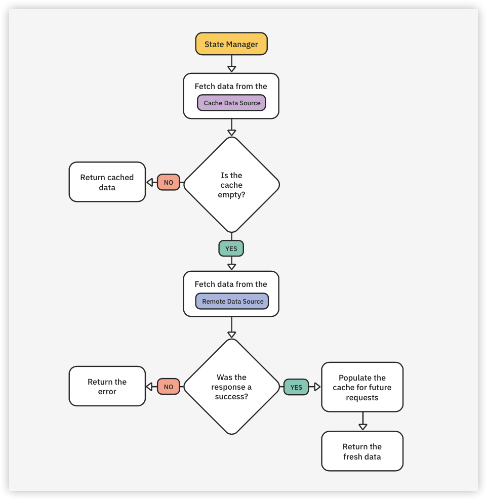
This is where repositories come to the rescue.
The repository pattern consists of creating a class, the repository, that sits in the middle of your state managers and data sources and takes all the coordination effort away from your state managers. In other words, your state managers won’t have to care where the data comes from anymore.
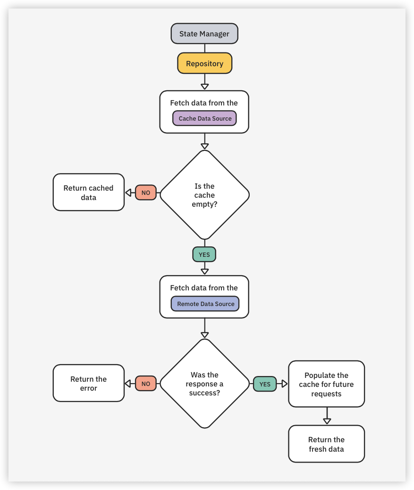
Notice that repositories also allow you to share coordination logic between different state managers in the future.
That’s really all there is to it. In fact, the repository pattern is so simple and brings so much value to your codebase that if you had to choose a single pattern to take away from the book, this should be it.
Let all that knowledge sink in for a minute while you learn about another concept that’s just as important: class dependencies.
Introducing Class Dependencies¶
A class dependency is any class that another class depends upon to do its work. For example, if QuoteRepository relies on FavQsApi to fetch its data, that makes FavQsApi a class dependency of QuoteRepository. Simple, right?
Now, there are two ways a class can get an instance of one of its class dependencies:
- Instantiating it by itself: You can do this inside the constructor, in the property’s declaration, just before using it in a function or anywhere else you want. An extremely minimal example would be:
class QuoteRepository {
final FavQsApi _favQsApi = FavQsApi();
// Omitted code.
}
- Requiring an instance to be passed in its constructor: For example:
class QuoteRepository {
const QuoteRepository(
this.favQsApi,
);
final FavQsApi favQsApi;
// Omitted code.
}
Both approaches have pros and cons.
The first one has the benefit that you don’t expose your inner dependencies to users of your class, which makes your classes more self-contained. For example, users of QuoteRepository don’t have to know it depends on FavQsApi. The downside is if other repositories in your code also depend on FavQsApi, you won’t be able to share the same instance between them because each of them creates its own. Another con is that you’ll need to repeat that instantiation logic everywhere you need it.
Note
Keep in mind the snippet above is just a minimal example. Instantiating classes is often not as simple as calling FavQsApi(). In the real world, your dependencies also have their own dependencies and other parameters they expect to receive in the constructor. That’s why replicating that instantiation logic is problematic.
On the other hand, the second approach, asking for the dependency in the constructor, just flips the pros and cons of the first one. It’s good because you can share instances of the dependencies between different classes… and bad because your classes aren’t self-contained anymore. The dependencies are now exposed in the constructor, and the class’s users need to take care of them.
Which one is best? As always, it depends on the situation. You’ll put both these ideas into practice throughout this chapter.
Handling Class Dependencies in WonderWords¶
If you think back to the architecture rules from Chapter 1, “Setting up Your Environment”, you’ll remember that each repository gets a separate internal package. But why?
Repositories are often used by multiple features. That alone makes it impossible for you to put them inside a feature package because features shouldn’t depend on one another — therefore, you wouldn’t be able to use a repository in more than one feature.
An alternative would be to have a single repositories package that all your features could depend on to access all the repositories. But packages are supposed to group stuff that’s often used together, and it’s improbable that a single feature would end up needing all repositories.
That leaves you with one right choice: having one package for each repository.
To save you some time, this chapter already has a quote_repository package under the packages folder of the starter project. Open the project in your preferred IDE. Then, fetch the project’s dependencies by using the terminal to run make get from the root directory. Wait until the command finishes executing; ignore all the errors in the code for now.
Expand the lib folder of this quote_repository package, and, under src, open quote_repository.dart:
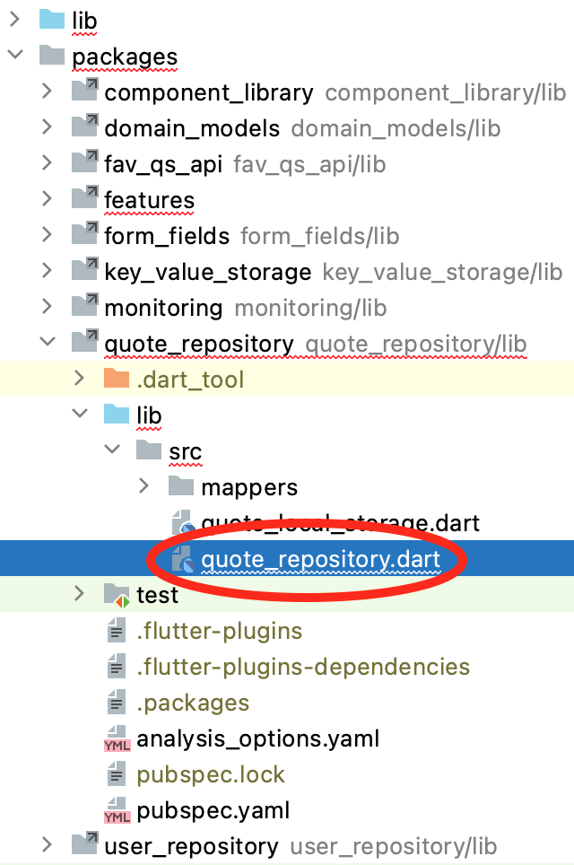
Kick off the work by replacing // TODO: Add constructor and data sources properties. with:
QuoteRepository({
required KeyValueStorage keyValueStorage,
required this.remoteApi,
@visibleForTesting QuoteLocalStorage? localStorage,
}) : _localStorage = localStorage ??
QuoteLocalStorage(
keyValueStorage: keyValueStorage,
);
final FavQsApi remoteApi;
final QuoteLocalStorage _localStorage;
There are a couple of things to note in there:
First, take a look at the two final properties. As mentioned, repositories orchestrate multiple data sources. In this case, you have two:
- FavQsApi: Retrieves and sends data to your remote API.
FavQsApicomes from another internal package of this project: fav_qs_api.
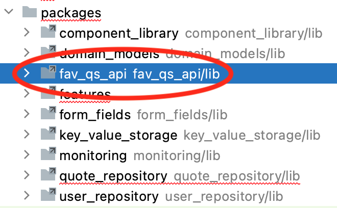
- QuoteLocalStorage: Retrieves and stores quotes in the device’s local storage.
QuoteLocalStoragedoes not come from a separate package. It’s defined inside this same folder you’re working on.
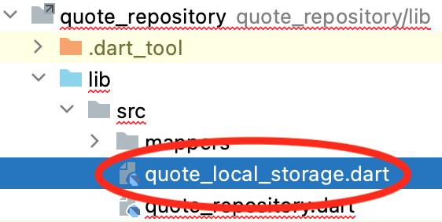
The first question you might have is: Why does FavQsApi have its own package while QuoteLocalStorage doesn’t?
QuoteLocalStorage is more specialized because it only deals with quotes. Therefore, it has no utility outside the quote_repository package.
FavQsApi, on the other hand, is more generic because it handles both quotes and authentication calls. That makes it suitable for the user_repository package as well, which you’ll cover in Chapter 6, “Authenticating Users”. As you know, when you need to share code between two packages — in this case, two repositories — you have to create a third one. In this case, that’s fav_qs_api.
Although QuoteLocalStorage doesn’t come from a separate package, it depends on KeyValueStorage, which does come from the separate key_value_storage package.
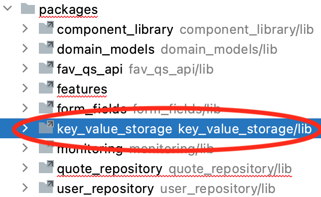
Think of KeyValueStorage as WonderWords’ local database. It’s a wrapper around the popular Hive package. It had to become an internal package of its own to concentrate all of the Hive configuration in a single place.
Note
If you navigate to KeyValueStorage by Command-clicking it inside the constructor you just created, you can look at the doc comments in there to become more familiar with the way it works.
Now, getting back to your constructor, notice it has three parameters: two required and one optional.
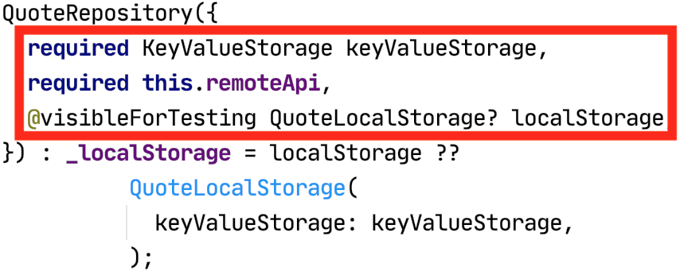
The answer to the previous question about whether you should require class dependencies in the constructor or instantiate them by yourself inside the class is: It depends. Here’s how you decide:
- Class dependencies whose files are situated inside the same package you’re working on should be instantiated inside the constructor. This is the case for
QuoteLocalStorage. - Class dependencies that come from other internal packages, like
KeyValueStorageandFavQsApi, must be received in the constructor.
Why is that? If a class comes from another package, like FavQsApi, it’s likely that it’s used by another internal package as well — user_repository, for example. That means that requiring the dependency to be passed in the constructor, rather than instantiating it inside the dependent class, is the best choice because it allows you to share the same instance across all places that use it.
Note
These shared instances still have to be created somewhere. That’s the main application package’s job because it’s the one responsible for integrating all the other packages. You’ll learn more about this in Chapter 7, “Routing & Navigating”.
On the other hand, when the class dependency is defined inside the same package you’re working on, like QuoteLocalStorage, you know for sure there’s no other package using it. Therefore, there’s no reason to expose it, and instantiating it inside the dependent class makes the most sense.
Notice that even though QuoteLocalStorage is instantiated inside QuoteRepository‘s constructor, as it should be, you still allowed it to be received in the constructor via the optional parameter. The intent behind this optional parameter isn’t to expose the class dependency to users of QuoteRepository. Instead, it only exists to allow you to provide a mock instance in automated testing, which is why you annotated it with @visibleForTesting. You’ll learn more about this in Chapter 14, “Automated Testing”.
Creating a Barrel File¶
Adding the constructor to QuoteRepository wasn’t enough to make the errors disappear; your starter project still doesn’t compile.
The issue is that your state managers cannot import QuoteRepository, even though the feature packages they’re on have already listed quote_repository as a package dependency in their pubspec.yaml.
That’s happening because QuoteRepository is inside an src folder, and Dart considers all files under src to be private.
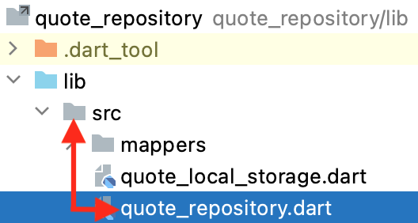
Note
Having an src folder isn’t mandatory; you could just have everything under lib. But then you’d be automatically exposing every file, even the ones that are supposed to be internal, like quote_local_storage.dart.
The Dart package layout conventions recommend that you put everything under an srcfolder, like you just did, but then consciously expose the files you want exposed by exporting them from an “exporter” file that you place directly under lib. This exporter file is known as a barrel file. Part of the convention is to give the barrel file the same name as the package.
To see this in practice, create a second quote_repository.dart file, but put this one directly under the lib folder.
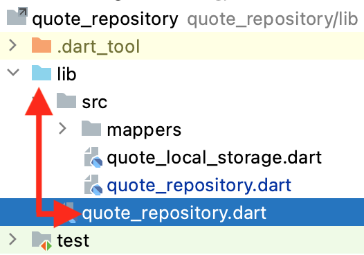
Then, insert the following line in that file:
export 'src/quote_repository.dart';
That’s all! All you did was create a public file to export your private ones. Since the state managers in the starter project were already importing this public barrel file, all the errors have now disappeared.
Observe that this barrel file works as a proxy, allowing you to change the internal structure of your package without affecting dependent packages. For example, if you move any of your src files to an src/any/folder/you/want directory, other packages wouldn’t even have to know about the move because they just import the barrel file.
Also, say you wanted to expose quote_local_storage.dart as well (which you don’t). All you’d have to do is add another export line to that barrel file.
To make sure everything works, build and run using the custom running configuration you created in the previous chapter. Since getQuoteListPage() in QuoteRepository just throws an exception for now, expect to see an error screen:
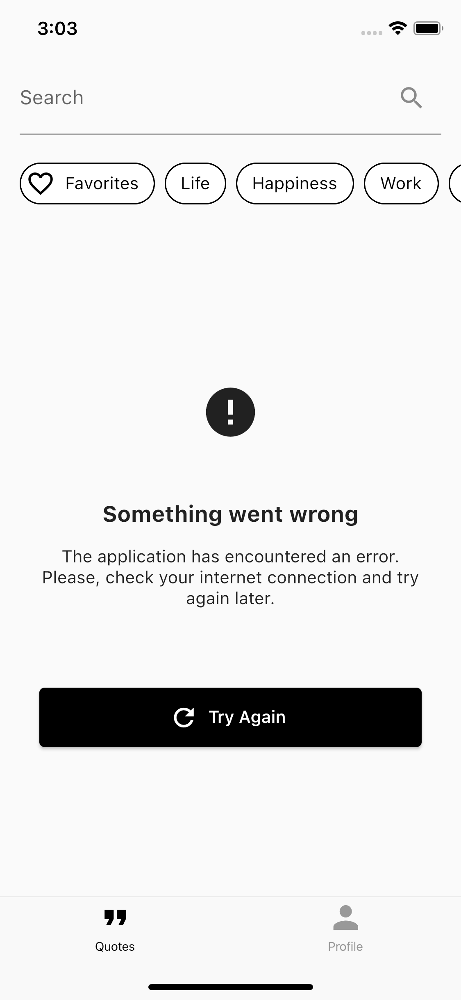
Note
If you’re having trouble running the app, it’s because you forgot to propagate the configurations you did in the first chapter’s starter project to the following chapters’ materials. If that’s the case, please revisit Chapter 1, “Setting up Your Environment”.
Learning About Pagination¶
Next on your plate is adding a real implementation to that getQuoteListPage() in QuoteRepository. Doing this will teach you everything you need to understand how all the other functions work. Start by observing the function’s definition; there are three things worth pointing out in there:
- The page word in the function’s name.
- The first parameter:
pageNumber. - The return type:
Stream<QuoteListPage>. For now, just stick withQuoteListPage; you’ll learn about theStreampart in the next section.
These are all indicators that you’re about to deal with something called pagination.
Pagination, or paging, happens when an API splits a list of results into batches — the so-called pages. It then expects you to request these batches individually, as you need to show them to the user. That allows users to start interacting with the app faster since they don’t need to wait for the entire list to load. It also reduces the risk of wasting cellular data by fetching items the user might not even get to see.
Imagine how much time and data it would take if Google delivered all the bazillion pages of your search results to you at once!
Pagination explains why getQuoteListPage() returns a QuoteListPage instead of some sort of List<Quote>. QuoteListPage contains two properties:
- quoteList: The items on that page.
- isLastPage: Indicates whether that page is the last one, so the state managers know when to stop asking for more pages. You’ll see this property in use in Chapter 5, “Managing Complex State With Blocs”.
Now for the Stream part…
Learning About Streams¶
Two types characterize asynchronous programming in Dart: Future and Stream.
Futures represent values that you can’t access immediately. For example, when getQuote() returns Future<Quote> instead of just Quote, it’s saying that it can’t return that Quote immediately because it will take some time to get it. So, instead of making the caller of the function wait for the actual Quote, the function immediately returns a channel — the Future — to the caller. It’ll send the actual data through that channel later, when the fetching succeeds.
A Stream is just the plural form of a Future. A Future emits one value at a time; a Stream can emit multiple values.
The reason getQuoteListPage() returns a Stream and not a Future has absolutely nothing to do with pagination and the fact that it could be emitting a sequence of pages. The actual reason lies in the fetchPolicy parameter of getQuoteListPage(). You’ll dive into that now.
Learning About Fetch Policies¶
As soon as you decide to cache results from a network call, you need to make a decision about the policy you want to follow when delivering those results later:
- Will you always return the cached items? What if they become stale?
- Will you continue to fetch items from the server every time and use the cached ones only as a fallback if the request fails? If so, will the frequent loading times upset the user? Assuming the data doesn’t change often, won’t you just be wasting cellular data by making unnecessary network calls?
There’s no definitive answer to these questions; you have to take each situation into account. How frequently does the data become stale? Should you prioritize speediness or accurateness in this scenario?
So, it’s time to be more specific and decide what the best decision for WonderWords’ home screen is.
When users open WonderWords, they probably want to see fresh quotes every time. If they like a quote so much they want to see it again, they can always favorite that quote.
Up to this point, it would be safe to assume the best policy would be to fetch quotes from the server every time and not worry about caching. But then, what if the network call fails? In that case, it would be great to have cached items to show as a fallback.
OK, you have a policy now. You’ll continue fetching quotes from the server every time, but then cache those quotes so you can use them in the future if the network call fails.
Your new strategy is pretty solid, but still has a huge flaw: Fetching items from the API every time means frequent — and long — loading times for the user. When a user opens an app, they want to start interacting with it as soon as possible.
Well… You can’t make the server return your items faster. But, now that you’re caching quotes anyway, there’s a master move you can make: Instead of showing a loading screen every time the user opens the app, you can show the cached quotes instead, using them as a placeholder to entertain the user while you fetch fresh quotes under the hood. Problem solved!
Note
Notice that with this new policy, returning a Future from your repository is no longer enough. When the state manager asks for the first page, you’ll emit the cached one (if any) first and then the one from the API, when it arrives. As you now know, you need to use a Stream when you’re working with multiple emissions.
Cool! The good news is that you now have a custom-tailored strategy for Wonder Words’ home screen. The bad news is that, even when considering just the home screen, the policy you designed still isn’t the best for every situation. Well, you wanted a real-world book, didn’t you?
Considering Additional Scenarios¶
Consider these edge scenarios:
- What if the user wants to purposefully refresh the list by pulling it down? In that case, you can’t return the “old” data first. Also, the user won’t mind seeing a loading screen; after all, they consciously requested fresh data.
- What if the user searches for a specific quote, but then clears out the search box so they can get back to the ones they saw previously? In that case, just showing the cached data is best. You don’t need to emit fresh items later, because the user just wants to go back to the previous state.
The moral of the story is: Depending on how complex a screen is, a single fetch policy might not be enough. When that’s the case, the best thing you can do is let the state manager decide the best policy for each step of the user experience journey. That’s the whole reason why getQuoteListPage() has that fetchPolicy parameter.
fetchPolicy is of type QuoteListPageFetchPolicy, which is the enum at the end of the file you’re working on. These are the enum’s values:
- cacheAndNetwork: Emit cached quotes first, if any, followed by quotes from the server, if the HTTP call succeeds. Useful for when the user first opens the app.
- networkOnly: Don’t use the cache in any situation. If the server request fails, let the user know. Useful for when the user consciously refreshes the list.
- networkPreferably: Prefer using the server. If the request fails, try using the cache. If there isn’t anything in the cache, then let the user know an error occurred. Useful for when the user requests a subsequent page.
- cachePreferably: Prefer using the cache. If there isn’t anything in the cache, try using the server. Useful for when the user clears a tag or the search box.
Note
Notice that if it weren’t for the cacheAndNetwork policy, which is the only one that can emit twice, having a Future as the return type would suffice.
Enough theory! It’s time to get back to coding…
Populating the Cache¶
Each of the four supported policies might need data from the server at one point in time; after all, there’s no cacheOnly policy. So, your first step will be to create a utility function that fetches data from the server and populates the cache with it. That way, you can reuse that function inside the main getQuoteListPage() for all policies.
Open lib/quote_repository/src/quote_repository.dart and find the function that begins with Stream<QuoteListPage> getQuoteListPage(.... After this function, insert this new function:
// 1
Future<QuoteListPage> _getQuoteListPageFromNetwork(int pageNumber, {
Tag? tag,
String searchTerm = '',
String? favoritedByUsername,
}) async {
try {
// 2
final apiPage = await remoteApi.getQuoteListPage(
pageNumber,
tag: tag?.toRemoteModel(),
searchTerm: searchTerm,
favoritedByUsername: favoritedByUsername,
);
final isFiltering = tag != null || searchTerm.isNotEmpty;
final favoritesOnly = favoritedByUsername != null;
final shouldStoreOnCache = !isFiltering;
// 3
if (shouldStoreOnCache) {
// 4
final shouldEmptyCache = pageNumber == 1;
if (shouldEmptyCache) {
await _localStorage.clearQuoteListPageList(favoritesOnly);
}
final cachePage = apiPage.toCacheModel();
await _localStorage.upsertQuoteListPage(
pageNumber,
cachePage,
favoritesOnly,
);
}
final domainPage = apiPage.toDomainModel();
return domainPage;
} on EmptySearchResultFavQsException catch (_) {
throw EmptySearchResultException();
}
}
A lot’s going on in there:
- Unlike
getQuoteListPage(), this function can only emit one value — either the server list or an error. Therefore, having aFutureas the return type is enough. - Gets a new page from the remote API.
- You shouldn’t cache filtered results. If you tried to cache all the searches the user could possibly perform, you’d quickly fill up the device’s storage. Plus, users are willing to wait longer for searches.
- Every time you get a fresh first page, you have to remove all the subsequent ones you had previously stored from the cache. That forces those following pages to be fetched from the network in the future, so you don’t risk mixing updated and outdated pages. Not doing this can introduce problems; for example, if a quote that used to be on the second page moved to the first page, you’d risk showing that quote twice if you mixed cached and fresh pages.
Even though there are no visual changes to the app, build and run to make sure everything still works.
There are still two unexplained things: that catch block and the toRemoteModel(), toCacheModel(), and toDomainModel() calls. You’ll dive into those now.
Learning About Model Separation¶
Notice the object you get from the API by calling remoteApi.getQuoteListPage() is a QuoteListPageRM; RM stands for remote model. But, then, when you cache that result with _localStorage.upsertQuoteListPage(), the expected object is actually a QuoteListPageCM, where CM stands for cache model.
The types don’t match.
To make things even more interesting, the object you have to ultimately return at the end of your repository’s getQuoteListPage() is a QuoteListPage — so, neither of the two types above. Why is that?
Each layer of your app has its own specifications when it comes to its models. Your remote models, for example, replicate the structure of the JSONs and is full of JSON parsing annotations. On the other hand, your cache models are full of database stuff, which varies depending on the database package you’re using. Not to mention that some property types can also be different; for example, something that’s a Stringfor the API could be an enum for the database.
Lastly, since your repository’s data comes from the database at some times and from the network at others, you need a neutral, impartial model to return to your repository’s users. This is called the domain model, which is represented in this case by the pure QuoteListPage.
In other words, domain models are models that are agnostic to the source they’re coming from.
WonderWords defines domain models inside the separate domain_models package, which all the repositories’ packages depend on. Doing this allows different repositories to share the same domain models.
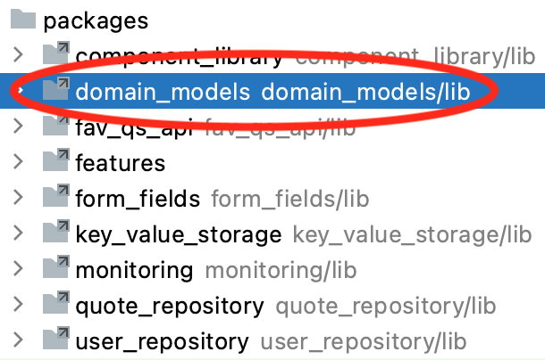
WonderWords follows another good practice, as well: In addition to domain models, it also defines domain exceptions in that same package. The same way you return neutral/domain models when everything goes right, you can throw neutral/domain exceptions when things go wrong.
You can see this happening inside that catch block you just wrote; whenever you catch an EmptySearchResultFavQsException, which comes from the fav_qs_apipackage, you replace it with an EmptySearchResultException, which comes from domain_models.
Having these domain exceptions may seem unnecessary, but that’s the only way your state managers can execute custom logic depending on the exception that occurred. For example, since the quote_list feature doesn’t depend on the fav_qs_api package, QuoteListBloc can’t check whether an exception is an EmptySearchResultFavQsException, simply because it doesn’t know that type. But, since the quote_list package does depend on domain_models, QuoteListBloc has no problems verifying if an exception is an EmptySearchResultException and using that to show a custom message to the user.
Learning About Mappers¶
OK, now you understand why you need different models for each data source and a neutral one to ultimately return from the repositories. But, how do you go from one model type to another? You might have guessed that you need some kind of converter. These converters are called mappers.
Mappers are just functions that take an object from one model and return an object from another. Any necessary conversion logic takes place in the middle. For example:
Quote mapCacheModelToDomainModel(QuoteCM cacheQuote) {
return Quote(
id: cacheQuote.id,
body: cacheQuote.body,
author: cacheQuote.author,
favoritesCount: cacheQuote.favoritesCount,
upvotesCount: cacheQuote.upvotesCount,
downvotesCount: cacheQuote.downvotesCount,
isUpvoted: cacheQuote.isUpvoted,
isDownvoted: cacheQuote.isDownvoted,
isFavorite: cacheQuote.isFavorite,
);
}
All you’re doing is instantiating a new Quote object using the values from the QuoteCM object you received.
Then, to use this mapper function, you’d just have to do this:
final domainQuote = mapCacheModelToDomainModel(cacheQuote);
Alternatively, you can make your mappers look prettier using Dart extension functions:
extension QuoteCMtoDomain on QuoteCM {
Quote toDomainModel() {
return Quote(
id: id,
body: body,
author: author,
favoritesCount: favoritesCount,
upvotesCount: upvotesCount,
downvotesCount: downvotesCount,
isUpvoted: isUpvoted,
isDownvoted: isDownvoted,
isFavorite: isFavorite,
);
}
}
Now you don’t have to receive a QuoteCM anymore; using Dart extension functions allowed you to create a function that works just as if you declared it inside of QuoteCM. Notice you can just type id, or body, for example, to access the properties inside QuoteCM. Mind-blowing, right?
Calling that mapper now becomes:
final domainQuote = cacheQuote.toDomainModel();
Much better, right?
Mappers are so simple, they’re almost tedious. That’s why we went ahead and created all of them for you inside the mapper directory of your quote_repository package. Look at the files in there to get a feeling for the overall structure.
Supporting Different Fetch Policies¶
Since you finally understand everything going on in _getQuoteListPageFromNetwork(), you’re ready for the main act.
Go to the upper getQuoteListPage() and replace throw UnimplementedError();with:
final isFilteringByTag = tag != null;
final isSearching = searchTerm.isNotEmpty;
final isFetchPolicyNetworkOnly =
fetchPolicy == QuoteListPageFetchPolicy.networkOnly;
// 1
final shouldSkipCacheLookup =
isFilteringByTag || isSearching || isFetchPolicyNetworkOnly;
if (shouldSkipCacheLookup) {
// 2
final freshPage = await _getQuoteListPageFromNetwork(
pageNumber,
tag: tag,
searchTerm: searchTerm,
favoritedByUsername: favoritedByUsername,
);
// 3
yield freshPage;
} else {
// TODO: Cover other fetch policies.
}
Here’s what’s happening:
- There are three situations in which you want to skip the cache lookup and return data straight from the network: If the user has a tag selected, if they’re searching or if the caller of the function explicitly specified the
networkOnlypolicy. - This uses the function you created a few sections earlier.
- The easiest way to generate a
Streamin a Dart function is by addingasync*to the function’s header and then using theyieldkeyword whenever you want to emit a new item. You can take a deep dive on the subject here: Creating streams in Dart.
You’ve now covered all the scenarios where you don’t need the cache lookup — which is when the user has a filter or when the policy is networkOnly. Now, you’ll work on the scenarios where the cache lookup is mandatory.
Replace // TODO: Cover other fetch policies. with:
final isFilteringByFavorites = favoritedByUsername != null;
final cachedPage = await _localStorage.getQuoteListPage(
pageNumber,
// 1
isFilteringByFavorites,
);
final isFetchPolicyCacheAndNetwork =
fetchPolicy == QuoteListPageFetchPolicy.cacheAndNetwork;
final isFetchPolicyCachePreferably =
fetchPolicy == QuoteListPageFetchPolicy.cachePreferably;
// 2
final shouldEmitCachedPageInAdvance =
isFetchPolicyCachePreferably || isFetchPolicyCacheAndNetwork;
if (shouldEmitCachedPageInAdvance && cachedPage != null) {
// 3
yield cachedPage.toDomainModel();
// 4
if (isFetchPolicyCachePreferably) {
return;
}
}
// TODO: Call the remote API.
Here’s what you just did:
- Your local storage keeps the favorite list in a separate bucket, so you have to specify whether you’re storing the general or the favorites list.
- Whether
fetchPolicyiscacheAndNetworkorcachePreferably, you have to emit the cached page. The difference between the two policies is that, forcacheAndNetwork, you’ll also emit the server page later on. - To return the cached page, which is a
QuoteListPageCM, you have to call the mapper function to convert it to the domainQuoteListPage. - If the policy is
cachePreferablyand you’ve emitted the cached page successfully, there’s nothing else to do. You can justreturnand close theStreamhere.
Your next step is to fetch the page from the API to complete the three remaining scenarios:
- When the policy is
cacheAndNetwork. You’ve already covered the cache part, but the AndNetwork is still missing. - When the policy is
cachePreferablyand you couldn’t get a page from the cache. - When the policy is
networkPreferably.
To do this, replace // TODO: Call the remote API. with:
try {
final freshPage = await _getQuoteListPageFromNetwork(
pageNumber,
favoritedByUsername: favoritedByUsername,
);
yield freshPage;
} catch (_) {
// 1
final isFetchPolicyNetworkPreferably =
fetchPolicy == QuoteListPageFetchPolicy.networkPreferably;
if (cachedPage != null && isFetchPolicyNetworkPreferably) {
yield cachedPage.toDomainModel();
return;
}
// 2
rethrow;
}
There’s nothing too fancy going on here:
- If the policy is
networkPreferablyand you got an error trying to fetch a page from the network, you try to revert the error by emitting the cached page instead — if there is one. - If the policy is
cacheAndNetworkorcachePreferably, you’ve already emitted the cached page a few lines earlier, so your only option now is torethrowthe error if the network call fails. That way, your state manager can handle it properly by showing the user an error.
That’s all for this chapter! Build and run to make sure everything works as intended. The last time you did this, you saw an error screen. Now, expect to see this:
Play with the app on your device and notice how it leverages the different fetch policies. For example, when you refresh the list by pulling it down, it takes longer to load the screen; that’s the networkOnly policy in use. When you add a tag and then remove it, the app comes back to the previous state pretty quickly; that’s due to the cachePreferably policy. When you close the app and reopen it, data loads almost instantly, but then you can see how it’s swapped out after a few seconds; that’s cacheAndNetwork in action.
Key Points¶
- Repositories become indispensable when you have more than one data source involved in the same operation. The most common situation where that happens is when you cache API results.
- Caching improves the user experience by allowing your app to respond faster and without an internet connection. It also saves data consumption by avoiding unnecessary round-trips to the server.
- A repository is an orchestrator of data sources. It abstracts the actual source of the data away from your state managers.
- When a class dependency is defined in the same package you’re working on, you should instantiate it inside the dependent class. Alternatively, if a class dependency comes from another internal package, you should require it to be passed in the constructor.
- Structuring a package with an src folder and a barrel file allows you to cherry-pick the files you want to export and hide your package’s internal structure.
- Pagination minimizes the risk of fetching data unnecessarily.
- Streams are just Futures that can emit multiple results.
- A fetch policy is the strategy you use to fetch some piece of data. Sometimes having a single policy is not good enough, so you should allow the caller of the function to decide the most appropriate policy for each moment.
- Each source of data in your app needs its own model classes. Ultimately, mapper functions will convert these source-specific models into neutral/domain models to avoid leaking implementation details throughout your codebase.
Where to Go From Here?¶
This chapter took some effort, but keep in mind that this is as complex as repositories get. Supporting different fetch policies is quite an accomplishment.
While all the concepts are still fresh in your mind, explore how the other functions in QuoteRepository work. For instance, see how we used Dart extension functions to avoid code repetition and achieve a better code design in the functions that modify the quotes, like favoriteQuote() and upvoteQuote().
The following chapters will show you how the other side of all this works. You’ll learn how to consume repositories by building state managers powered by the Bloc library.